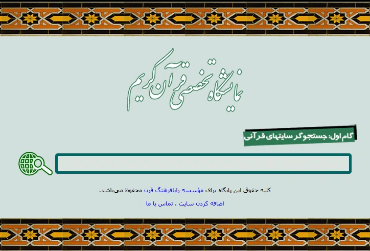
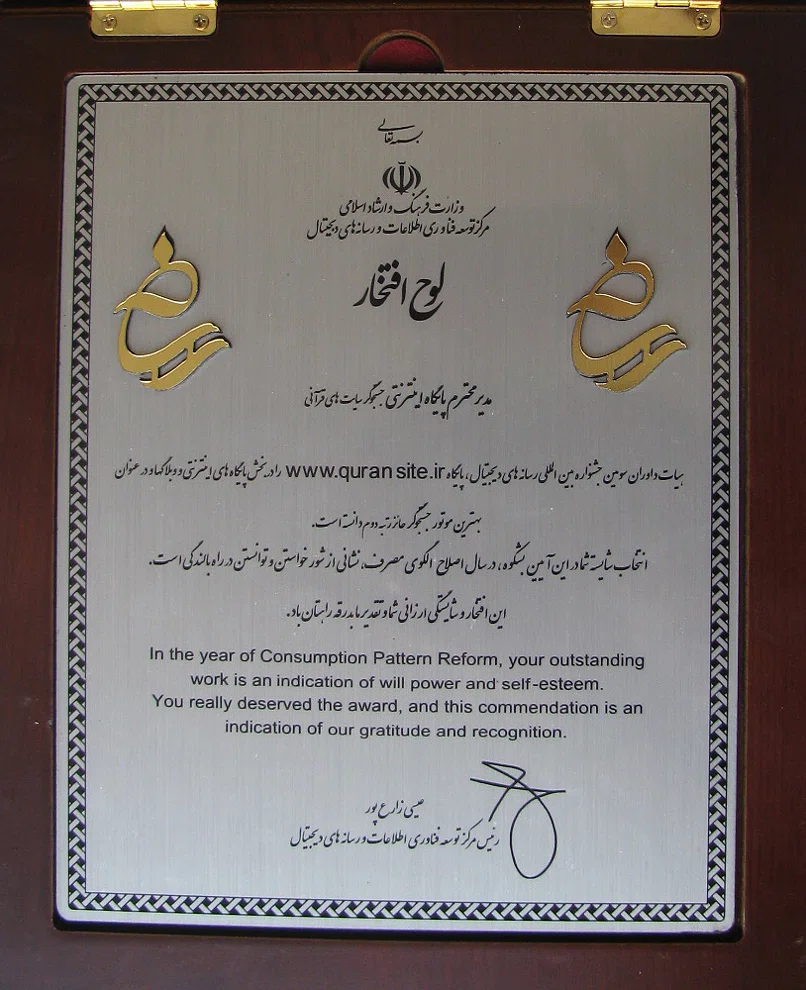

۰۱
فناوری و دسترسی
جستجوگر سایتهای قرآنی
پایگاهی برای گردآوری و یافتن آسانتر وبسایتها و منابع مرتبط با قرآن کریم. این پروژه در سال ۱۳۹۲ موفق به دریافت لوح افتخار از وزارت فرهنگ و ارشاد اسلامی، مرکز فناوری اطلاعات و رسانههای دیجیتال شد.


لوح افتخار · ۱۳۹۲